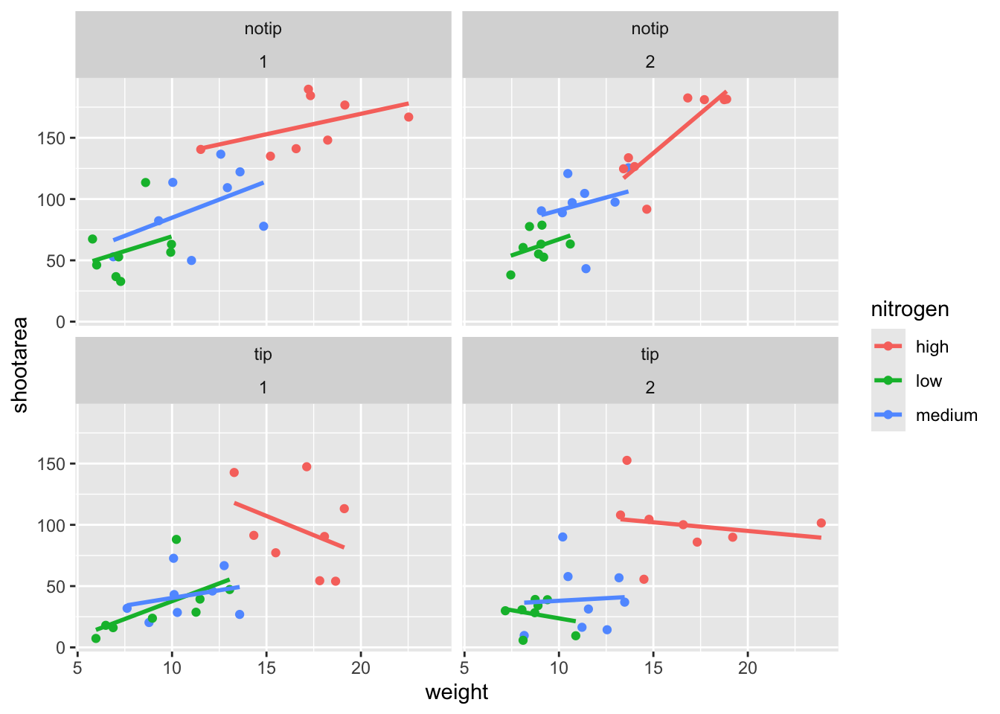

5.2 The start of the end
The first step in producing a plot with ggplot() is the easiest! We just need to install and then load the package. Use the skills you learnt in Chapter 1 to install and load the package. Note that although most people refer to the package as ggplot, it’s proper name is ggplot2.
With that taken care of, let’s make our first ggplot()!
5.2.1 The purest of ggplots
When we run our ‘in person’ R courses that accompany this book, we often ask our students to name all of the functions they have either learnt during the course, have heard of previously, or have used before (we call it R bingo!). At this point in the course, the students have not yet learnt about ggplot2, but never-the-less one year a student suggested the function ggplot(). When asked what the ggplot() function does, they joked that it obviously makes a ggplot. This makes intuitive sense, so let’s make a ggplot now:

And here we have it. A fully formed, perfect ggplot. We may have a small issue though. Some puritan data visualisers/plotists/figurines make the claim that figures should include some form of information beyond a light grey background. As loathe as we are to agree with purists, we’ll do so here. We really should include some information, but to do so, we need data.
We’ll keep using the flower dataset that you’ve used in Chapter 3. Let’s have a quick reminder of what the structure of the data looks like.
flower <- read.table("data/flower.csv", header = TRUE, sep = ",")
str(flower)
## 'data.frame': 96 obs. of 8 variables:
## $ treat : chr "tip" "tip" "tip" "tip" ...
## $ nitrogen : chr "medium" "medium" "medium" "medium" ...
## $ block : int 1 1 1 1 1 1 1 1 2 2 ...
## $ height : num 7.5 10.7 11.2 10.4 10.4 9.8 6.9 9.4 10.4 12.3 ...
## $ weight : num 7.62 12.14 12.76 8.78 13.58 ...
## $ leafarea : num 11.7 14.1 7.1 11.9 14.5 12.2 13.2 14 10.5 16.1 ...
## $ shootarea: num 31.9 46 66.7 20.3 26.9 72.7 43.1 28.5 57.8 36.9 ...
## $ flowers : int 1 10 10 1 4 9 7 6 5 8 ...We know from the “final figure” that we want shootarea on the y axis (response/dependent variable) and weight on the x axis (explanatory/independent variable). To do this in ggplot2 we need to make use of the aes() function and also add a data = argument. aes is short for aesthetics, and it’s the function we use to specify what we want displayed in the figure.
If we did not include the aes() function, then the x = and y = arguments would produce an error saying that the object was not found. A good rule to keep in mind when using ggplot2 is that the variables which we want displayed on the figure must be included in aes() function via the mapping = argument (corresponding to the mapping layer from Fig. 4.1).
All features in the figure which alter the displayed information, not based on a variable in our dataset (e.g. increasing the size of points to an arbitrary value), is included outside of the aes() function. Don’t worry if that doesn’t make sense for now, we’ll come back to this later.
Let’s update our code to include the data and mapping layers (indicated by the grey Data and mustard Mapping layer bubbles which will precede relevant code chunks):

# Including aesthetics for x and y axes as well as specifying the dataset
ggplot(mapping = aes(x = weight, y = shootarea), data = flower)
That’s already much better. At least it’s no longer a blank grey canvas. We’ve now told ggplot2 what we want as our x and y axes as well as where to find that data. But what’s missing here is where we tell ggplot2 how to display that data. This is now the time to introduce you to “geoms” or geometry layers.
Geometries are the way that ggplot2 displays information. For instance geom_point() tells ggplot2 that you want the information to be displayed as points (making scatterplots possible for example). Given that the “final figure” uses points, this is clearly the appropriate geom to use here.
Before we can do that, we need to talk about the coding structure used by ggplot2. The analogy that we and many others use is to say that making a figure in ggplot2 is much like painting. What we’ve did in the above code was to make our “canvas”. Now we are going to add sequential layers to that painting, increasing the complexity and detail over time. Each time we want to include a new layer we need to end a preceding layer with a + at the end to tell ggplot2 that there are additional layers coming.
Let’s add (+) a new geometry layer now:

ggplot(aes(x = weight, y = shootarea), data = flower) +
geom_point() # Adding a geom to display data as point data
When you first start using ggplot2 there are three crucial layers that require your input. You can safely ignore the other layers initially as they all recieve sensible defaults (if sometimes ugly). The three crucial layers are:

Figure 5.2: Data - the information we want to plot

Figure 5.3: Mapping - which variables we want displayed and where
Figure 5.4: Geometry - how we want that data displayed
Given that data only requires us to specify the dataset we want to use, it is trivially easy to complete. Mapping only requires you to specify what variables in the data to use, often just the x- and y-axes (specified using aes()). Lastly, geometry is where we choose how we want the data to be visualised.
With just those three fundamentals, you will be able to produce a large variety of plots (see later in this chapter for a bestiary of plots).
If what we wanted was a quick and dirty figure to get a grasp of the trend in the data we can stop here. From the scatterplot that we’ve produced, we can see that shootarea looks like it’s increasing with weight in a linear fashion. So long as this answers the question we were asking from the data, we have a figure that is fit for purpose. Though for showing to other people we might want something a bit more developed. If we glance back to our “final figure” we can see that we have lines representing the different nitrogen concentrations. We can include lines using a geom. If you have a quick look through the available geoms [here][geoms], you might think that geom_line() would be appropriate. Let’s try it.
ggplot(aes(x = weight, y = shootarea), data = flower) +
geom_point() +
geom_line() # Adding geom_line
Not quite what we were going for. The problem that we have is that geom_line() is actually just playing join-the-dots in the order they appear in the data (an alternative to geom_path()). The geom we actually want to use is called geom_smooth(). We can fix that very easily just by changing “line” to “smooth”.

ggplot(aes(x = weight, y = shootarea), data = flower) +
geom_point() +
geom_smooth() # Changing to geom_smooth
Better, but still not what we wanted. The challenge here is that drawing a line is actually somewhat complicated. The way our line above was drawn was by using a method called “LOESS” (locally estimated scatterplot smoothing) which gives something very close to a moving average; useful in some cases, less so in others. ggplot2 will use LOESS as default when you have < 1000 observations, so we’ll need to manually specify the method. Instead of a wiggly line, we want a nice simple ‘line of best fit’ to be drawn using a method called “lm” (short for linear model - see Chapter 6 for more details). Try looking at the help file, using ?geom_smooth, to see what other options are available for the method = argument.
While we’re at it, let’s get rid of the confidence interval ribbon around the line. We prefer to do this as we think it’s clearer to the audience that this isn’t a properly analysed line and to treat it as a visual aid only. We can do this at the same time as changing the method by setting the se = argument (short for standard error) to FALSE.
Let’s update the code to use a linear model without confidence intervals.

ggplot(aes(x = weight, y = shootarea), data = flower) +
geom_point() +
geom_smooth(method = "lm", se = FALSE) # method and se 
We get the straight line that we wanted, though it’s still not matching the “final figure”. We need to alter geom_smooth() so that it draws lines for each level of nitrogen concentration. Getting ggplot2 to do that is pretty straightforward. We can use the colour = argument within aes() (remember whatever we include in aes() will be something displayed in the figure) to tell ggplot2 to draw a different coloured lines depending on nitrogen concentration. Keep in mind that we have no variable in our dataset called “nitrogen_colour”, so ggplot2 is taking care of that for us here and assigning a colour to each unique nitrogen level.
An aside: ggplot2 was written with both UK English and American English in mind, so both colour and color spellings work in ggplot2.

ggplot(aes(x = weight, y = shootarea), data = flower) +
geom_point() +
# Including colour argument in aes()
geom_smooth(aes(colour = nitrogen), method = "lm", se = FALSE)
We’re getting closer, especially since ggplot2 has automatically created a legend for us. At this point it’s a good time to talk about where to include information - whether to include it within a geom or in the main call to ggplot(). When we include information such as data = and aes() in ggplot() we are setting those as the default, universal values which all subsequent geoms use. Whereas if we were to include that information within a geom, only that geom would use that specific information. In this case, we can easily move the information around and get exactly the same figure.
ggplot() +
# Moved aes() and data into geoms
geom_point(aes(x = weight, y = shootarea), data = flower) +
geom_smooth(aes(x = weight, y = shootarea, colour = nitrogen),
data = flower, method = "lm", se = FALSE)
Doing so we get exactly the same figure. This ability to move information between the main ggplot() call or in specific geoms is surprisingly powerful. It can allow different geoms to display different (albeit similar) information (see more on this later).
For this worked example, we’ll move the same information back to the universal ggplot(), but we’ll also move colour = nitrogen into ggplot() so that we can have the points coloured according to nitrogen concentration as well.
# Moved colour = nitrogen into the universal ggplot()
ggplot(aes(x = weight, y = shootarea, colour = nitrogen), data = flower) +
geom_point() +
geom_smooth(method = "lm", se = FALSE)
This figure is now what we would consider to be the typical ggplot2 figure (once you know to look for it, you’ll see it everywhere). We have specified some information, with only a few lines of code, yet we have something that looks quite attractive. While it’s not yet the “final figure” it’s perfectly suited for showing the information we need from the data. You have now created your first “pure” ggplot using only the data, mapping and geom layers (as well as others indirectly).
Let’s keep going as we’re aiming for something a bit more “sophisticated”.
5.2.2 Wrapping grids
Having made our “pure” ggplot, the next big obstacle we’re going to tackle is the grid like layout of the “final figure” where our main figure has been split according to treatment and block, with new trends shown for each combination.
Each of these panels (technically “multiples”) are a great way to help other people understand what’s going on in the data. This is especially true with large datasets which can obscure subtle trends simply because so much data is overlaid on top of each other. When we split a single figure into multiples, the same axes are used for all multiples which serve to highlight shifts in the data (data in some multiples may have inherently higher or lower values for instance).
ggplot2 includes options for determining the layout of plots using the “facets” layer. We’ll start off by using facet_wrap() to show what this can do. For facet_wrap() to work we need to specify a formula for how the facets will be defined (see ?facet_wrap for more details and also how to define facets without using a formula). In our example we want to use the factor treat to determine the layout so our formula would look like ~ treat. You can read ~ treat as saying “according to treatment”. Let’s see how it works:

ggplot(aes(x = weight, y = shootarea, colour = nitrogen), data = flower) +
geom_point() +
geom_smooth(method = "lm", se = FALSE) +
# Splitting the single figure into multiple depending on treatment
facet_wrap(~ treat)
That’s pretty good. Notice how we can see the impact that the tip treatment has on shoot area now (generally lowering shoot area), where in the previous figure this was much more difficult to see?
While this looks pretty good, we are still missing any information showing the effect of the different blocks. Given that facet_wrap() can use a formula, maybe we could simply include block in the formula? Remember that block refers to the region in the greenhouse where the plants were grown. Let’s try it and see what happens.
ggplot(aes(x = weight, y = shootarea, colour = nitrogen), data = flower) +
geom_point() +
geom_smooth(method = "lm", se = FALSE) +
# Adding "block" to formula
facet_wrap(~ treat + block)
This facet layout is almost exactly what we want. Almost, but not exactly. In this case we actually want to be using facet_grid(), an alternative to facet_wrap(), which should put us back on track to make the “final figure”.
Play around: Try changing the formula to see what happens. Something like ~ treat + flowers or even ~ treat + block + flowers. The important thing to remember here is that facet_wrap() will create a new figure for each value in a variable. So when you wrap using a continuous variable like flowers, it makes a plot for every unique number of flowers counted. Be aware of what it is you are doing, but never be scared to experiment. Mistakes are easily fixed in R - it’s not like a point and click programme where you’d have to go back through all those clicks to get the same figure produced. Made a mistake? Easy, change it back and rerun the code (see Chapter 9 for version control which takes this to the next level).
Using facet_grid instead of facet_wrap produces the following plot
ggplot(aes(x = weight, y = shootarea, colour = nitrogen), data = flower) +
geom_point() +
geom_smooth(method = "lm", se = FALSE) +
# Changing to facet_grid
facet_grid(~ treat + block)
That’s disappointing. It’s pretty much the same as what we had before and is no closer to the “final figure”. To fix this we need to do to rearrange our formula so that we say that it is block in relation to treatment (not in combination with).
5.2.3 Plotting multiple ggplots
And we’re there. Although the styling is not the same as the “final figure” this is showing the same core fundamental information. While we’ve made multiples of the same figure, what if we wanted to take two completely different figures and plot them together in the same frame? As a demonstration, let’s plot the last figure we made and the “final figure” shown at the start of this chapter one on top of the other to see how they compare. To do this we are going to use a package called patchwork. First you will need to install and load the patchwork package.
An important note: For those who have used base R to produce their figures and are familiar with using par(mfrow = c(2,2)) (which allows plotting of four figures in two rows and two columns) be aware that this does not work for ggplot2 objects. Instead you will need to use either the patchwork package or alternative packages such as gridArrange or cowplot or covert the ggplot2 objects to grobs.
To plot both of the plots together we need to go back to our previous code and do something clever. We need to assign each figure to a separate object and then use these objects when we use patchwork. For instance, we can assigned our “final figure” plot to an object called final_figure (we’re not very imaginative!), you haven’t see the code yet so you’ll just have to take our word for it! You may see this method used a lot in other textbooks or online, especially when adding addition layers. Something like this:
And later to add additional layers:
We prefer not to use this approach here, as we like to always have the code visible to you while you’re reading this book. Anyway, let’s remind ourselves of the final figure.

We’ll now assign the code we wrote when creating our previous plot to an object called rbook_figure:
# Naming our figure object
rbook_figure <- ggplot(aes(x = weight, y = shootarea, colour = nitrogen), data = flower) +
geom_point() +
geom_smooth(method = "lm", se = FALSE) +
facet_grid(block ~ treat)
Now when the code is run, the figure won’t be shown immediately. To show the figure we need to type the name of the object. We’ll do this at the same time as showing you how patchwork works.
An old headache when using ggplot2 was that it could be difficult to create a nested figure (different plots, or “multiples”, all part of the same dataset). patchwork resolves this problem very elegantly and simply. We have two immediate and simple options with patchwork; arrange figures on top of each other (specified with a /) or arrange figures side-by-side (specified with either a + or a |). Let’s try to plot both figures, one on top of the other.
Play around: Try to create a side-by-side version of the above figure (hint: try the other operators).
We can take this one step further and assign nested patchwork figures to an object and use this in turn to create labels for individuals figures.
nested_compare <- rbook_figure / final_figure
nested_compare +
plot_annotation(tag_levels = "A", tag_suffix = ")")
This is only the basics of what the patchwork package can do but there are many other uses. We won’t go into them in any great detail here, but later in the tips and tricks section we’ll show you some more cool features.
5.2.4 Make it your own
While we already have a great figure showing the main aspects of our data, it uses many default layer options. Whilst the default options are fine we may want to change them to get our plot looking exactly how we want it. Maybe we’re going to use this figure in a presentation and we want to make sure someone in the very back of the room can easily read the figure. Maybe we want to use our own colour scheme. Maybe we want to change the grey background to a nice bright neon pink. In essence, maybe we want to decide things for ourselves. This next section will go through how to customise the appearance of our figure.
Let’s start with the easier stuff, namely changing the size of the plotting symbols using the size = argument. Before we do, have a think about where we’d include this argument? Should it be in main call to ggplot() or in the geom_point() geom? Does size depend on a variable in our dataset and is therefore something we want displayed on the figure (meaning we should include it within aes())? Or is it merely changing the appearance of information?
Let’s include it in the geom_point geom
ggplot(aes(x = weight, y = shootarea, colour = nitrogen), data = flower) +
# Including size argument to change the size of the points
geom_point(size = 2) +
geom_smooth(method = "lm", se = FALSE) +
facet_grid(block ~ treat)
Pretty straight forward, we changed the size from the default of size = 1 to a value that we decide for ourselves. What happens if you included size in ggplot() or within the aes() of geom_point()?
If we wanted to change the shape of the plotting symbols to reflect the different nitrogen concentrations (low, high, medium), how do you think we’d do that? We’d use the shape = argument, but this time we need to include an aes() within geom_point() because we want to include specific information to be displayed on the figure.

ggplot(aes(x = weight, y = shootarea, colour = nitrogen), data = flower) +
# Including shape argument to change the shape of the points
geom_point(aes(shape = nitrogen), size = 2) +
geom_smooth(method = "lm", se = FALSE) +
facet_grid(block ~ treat)
Try including shape = nitrogen without also including aes() and see what happens.
We’re edging our way closer to our “final figure”. Another thing we may want to be able to do is change the transparency of the points. While it’s not actually that useful here, changing the transparency of points is really valuable when you have lots of data resulting in clusters of points obscuring information. Doing this is easily accomplished using the alpha = argument. Again, ask yourself where you think the alpha = argument should be included (hint: you should put it in the geom_point geom!).
ggplot(aes(x = weight, y = shootarea, colour = nitrogen), data = flower) +
# Including alpha argument to change the transparency of the points
geom_point(aes(shape = nitrogen), size = 2, alpha = 0.6) +
geom_smooth(method = "lm", se = FALSE) +
facet_grid(block ~ treat)
We can also include user defined labels for the x and y axis. There are a couple of ways to do this, but a more familiar way may be to use the same syntax as used in base R figures; using xlab() and ylab(). We’ll specify that these belong to the ggplot by using the + symbol.
ggplot(aes(x = weight, y = shootarea, colour = nitrogen), data = flower) +
geom_point(aes(shape = nitrogen), size = 2, alpha = 0.6) +
geom_smooth(method = "lm", se = FALSE) +
facet_grid(block ~ treat) +
# Adding layers for x and y labels
xlab("Weight of flower (g)") +
ylab("Area of shoot (cm^2)")
Great. Just as we wanted, though getting the “(cm^2)” to show the square as a superscript would be ideal. Here, we’re going to accomplish that using a function which is part of base R called bquote() which allows for special characters to be shown.
ggplot(aes(x = weight, y = shootarea, colour = nitrogen), data = flower) +
geom_point(aes(shape = nitrogen), size = 2, alpha = 0.6) +
geom_smooth(method = "lm", se = FALSE) +
facet_grid(block ~ treat) +
xlab("Weight of flower (g)") +
# Using bquote to get mathematically correct formatting
ylab(bquote("Area of shoot"~(cm^2)))
Let’s now work on the legend title while also including a caption to warn people looking at the figure to treat the trend lines with caution. We’ll use a new layer called labs(), short for labels, which we could have also used for specifying the x and y axes labels (we didn’t only for demonstration purposes, but give it a shot). labs() is a fairly straightforward function. Have a look at the help file (using ?labs) to see which arguments are available. We’ll be using caption = argument for our caption, but notice that there isn’t a single simple argument for legend =? That’s because the legend actually contains multiple pieces of information; such as the colour and shape of the symbols. So instead of legend = we’ll use colour = and shape =. Here’s how we do it:
ggplot(aes(x = weight, y = shootarea, colour = nitrogen), data = flower) +
geom_point(aes(shape = nitrogen), size = 2, alpha = 0.6) +
geom_smooth(method = "lm", se = FALSE) +
facet_grid(block ~ treat) +
xlab("Weight of flower (g)") +
ylab(bquote("Area of shoot"~(cm^2))) +
# Adding labels for shape, colour and a caption
labs(shape = "Nitrogen Concentration", colour = "Nitrogen Concentration",
caption = "Regression assumptions are unvalidated")Play around: Try removing colour = or shape = from labs() to see what happens. The resulting legends are why we need to specify both colour and shape (and call it the same thing).
Now’s a good time to introduce the \n. This is a base R feature that tells R that a string should be continued on a new line. We can use that with “Nitrogen Concentration” so that the legend title becomes more compact.
ggplot(aes(x = weight, y = shootarea, colour = nitrogen), data = flower) +
geom_point(aes(shape = nitrogen), size = 2, alpha = 0.6) +
geom_smooth(method = "lm", se = FALSE) +
facet_grid(block ~ treat) +
xlab("Weight of flower (g)") +
ylab(bquote("Area of shoot"~(cm^2))) +
# Including \n to split legend title over two lines
labs(shape = "Nitrogen\nConcentration", colour = "Nitrogen\nConcentration",
caption = "Regression assumptions are unvalidated")
We can now move onto some more wholesale-stylistic choices using the themes layer.
5.2.5 Setting the theme
Themes control the general style of a ggplot (things like the background colour, size of text etc.) and comes with a whole bunch of predefined themes. Let’s play around with themes using some skills we’ve already learnt; assigning plots to an object and plotting multiple ggplots in a single figure using patchwork. We assign themes by creating a new layer with the general notation - theme_NameOfTheme(). For example, to use the theme_classic, theme_bw, theme_minimal and theme_light themes

classic <- ggplot(aes(x = weight, y = shootarea, colour = nitrogen), data = flower) +
geom_point(aes(shape = nitrogen), size = 2, alpha = 0.6) +
geom_smooth(method = "lm", se = FALSE) +
facet_grid(block ~ treat) +
xlab("Weight of flower (g)") +
ylab(bquote("Area of shoot"~(cm^2))) +
labs(shape = "Nitrogen\nConcentration", colour = "Nitrogen\nConcentration",
caption = "Regression assumptions are unvalidated") +
# Classic theme
theme_classic()
bw <- ggplot(aes(x = weight, y = shootarea, colour = nitrogen), data = flower) +
geom_point(aes(shape = nitrogen), size = 2, alpha = 0.6) +
geom_smooth(method = "lm", se = FALSE) +
facet_grid(block ~ treat) +
xlab("Weight of flower (g)") +
ylab(bquote("Area of shoot"~(cm^2))) +
labs(shape = "Nitrogen\nConcentration", colour = "Nitrogen\nConcentration",
caption = "Regression assumptions are unvalidated") +
# Black and white theme
theme_bw()
minimal <- ggplot(aes(x = weight, y = shootarea, colour = nitrogen), data = flower) +
geom_point(aes(shape = nitrogen), size = 2, alpha = 0.6) +
geom_smooth(method = "lm", se = FALSE) +
facet_grid(block ~ treat) +
xlab("Weight of flower (g)") +
ylab(bquote("Area of shoot"~(cm^2))) +
labs(shape = "Nitrogen\nConcentration", colour = "Nitrogen\nConcentration",
caption = "Regression assumptions are unvalidated") +
# Minimal theme
theme_minimal()
light <- ggplot(aes(x = weight, y = shootarea, colour = nitrogen), data = flower) +
geom_point(aes(shape = nitrogen), size = 2, alpha = 0.6) +
geom_smooth(method = "lm", se = FALSE) +
facet_grid(block ~ treat) +
xlab("Weight of flower (g)") +
ylab(bquote("Area of shoot"~(cm^2))) +
labs(shape = "Nitrogen\nConcentration", colour = "Nitrogen\nConcentration",
caption = "Regression assumptions are unvalidated") +
# Light theme
theme_light()
(classic | bw) /
(minimal | light)
In terms of finding a theme that most closely matches our “final figure”, it’s probably going to be theme_classic(). There are additional themes available to you, and even more available online. ggthemes is a package which contains many more themes for you to use. The BBC even have their own ggplot2 theme called “BBplot” which they use when making their own figures (while good, we don’t like it too much for scientific figures). Indeed, you can even make your own theme which is what we’ll work on next. To begin with, we’ll have a look to see how theme_classic() was coded. We can do that easily enough by just writing the function name without the paranetheses (see Chapter 7 for a bit more on this).
theme_classic
function (base_size = 11, base_family = "", base_line_size = base_size/22,
base_rect_size = base_size/22)
{
theme_bw(base_size = base_size, base_family = base_family,
base_line_size = base_line_size, base_rect_size = base_rect_size) %+replace%
theme(panel.border = element_blank(), panel.grid.major = element_blank(),
panel.grid.minor = element_blank(), axis.line = element_line(colour = "black",
size = rel(1)), legend.key = element_blank(),
strip.background = element_rect(fill = "white", colour = "black",
size = rel(2)), complete = TRUE)
}
<bytecode: 0x7fe7b6314f90>
<environment: namespace:ggplot2>Let’s use this code as the basis for our own theme and modify it according to our needs. We’ll call the theme, theme_rbook. Not all of the options will immediately make sense, but don’t worry about this too much for now. Just know that the settings we’re putting in place are:
- Font size for axis titles = 13
- Font size for x axis text = 10
- Font size for y axis text = 10
- Font for caption = 10 and italics
- Background colour = white
- Background border = black
- Axis lines = black
- Strip colour (for facets) = light blue
- Strip text colour (for facets) = black
- Legend box colours = No colour
This is by no means an exhaustive list of features you can specify in your own theme, but this will get you started. Of course, there’s no need to use a personalised theme as the pre-built options are perfectly suitable.
theme_rbook <- function(base_size = 13, base_family = "", base_line_size = base_size/22,
base_rect_size = base_size/22) {
theme(
axis.title = element_text(size = 13),
axis.text.x = element_text(size = 10),
axis.text.y = element_text(size = 10),
plot.caption = element_text(size = 10, face = "italic"),
panel.background = element_rect(fill="white"),
axis.line = element_line(size = 1, colour = "black"),
strip.background =element_rect(fill = "#cddcdd"),
panel.border = element_rect(colour = "black", fill=NA, size=0.5),
strip.text = element_text(colour = "black"),
legend.key=element_blank()
)
}
theme_rbook() is now available for us to use just like any other theme. Let’s try remaking our figure using our new theme.
ggplot(aes(x = weight, y = shootarea, colour = nitrogen), data = flower) +
geom_point(aes(shape = nitrogen), size = 2, alpha = 0.6) +
geom_smooth(method = "lm", se = FALSE) +
facet_grid(block ~ treat) +
xlab("Weight of flower (g)") +
ylab(bquote("Area of shoot"~(cm^2))) +
labs(shape = "Nitrogen\nConcentration", colour = "Nitrogen\nConcentration",
caption = "Regression assumptions are unvalidated") +
# Updated theme to our theme_rbook
theme_rbook() # use our new theme
5.2.6 Prettification
We’ve pretty much replicated our “final figure”. We just have a few final adjustments to make, and we’ll do so in order of difficulty.
Let’s remind ourselves of what that “final figure” looked like. Remember, since we’ve previously stored the figure as an object called final_figure we can just type that into the console and pull up the figure.

Let’s begin the final push by including that dashed horizontal line at the average shoot area, at about 80, on our y axis. This represents the overall mean area of a shoot, regardless of weight of flower, nitrogen concentration, treatment, or block. To draw a horizontal line we use a geom called geom_hline(), and the most important thing we need to specify is the y intercept value (in this case being our mean area of a shoot). We can also change the type of line using the argument linetype = and also the colour (as we did before). Let’s see how it works.

ggplot(aes(x = weight, y = shootarea, colour = nitrogen), data = flower) +
geom_point(aes(shape = nitrogen), size = 2, alpha = 0.6) +
geom_smooth(method = "lm", se = FALSE) +
facet_grid(block ~ treat) +
xlab("Weight of flower (g)") +
ylab(bquote("Area of shoot"~(cm^2))) +
labs(shape = "Nitrogen\nConcentration", colour = "Nitrogen\nConcentration",
caption = "Regression assumptions are unvalidated") +
# Added a horizontal line using geom_hline
geom_hline(aes(yintercept = mean(shootarea)), size = 0.5, colour = "black", linetype = 3) +
theme_rbook()
Notice how we included the function mean(shootarea) within the geom_hline() function? We could also do that externally to the ggplot2 code and get the same result.
ggplot(aes(x = weight, y = shootarea, colour = nitrogen), data = flower) +
geom_point(aes(shape = nitrogen), size = 2, alpha = 0.6) +
geom_smooth(method = "lm", se = FALSE) +
facet_grid(block ~ treat) +
xlab("Weight of flower (g)") +
ylab(bquote("Area of shoot"~(cm^2))) +
labs(shape = "Nitrogen\nConcentration", colour = "Nitrogen\nConcentration",
caption = "Regression assumptions are unvalidated") +
# Manually entering mean value
geom_hline(aes(yintercept = 79.8), size = 0.5, colour = "black", linetype = 3) +
theme_rbook()
Exactly the same figure but produced in a slightly different way (the point being that there are always multiple ways to get what you want).
Now let’s tackle that “overall” nitrogen effect. This overall line is effectively the figure we produced much earlier when we learnt how to include a line of best fit from a linear model. However, we are already using geom_smooth(), surely we can’t use it again? This may shock and/or surprise you so please ensure you are seated. You can use geom_smooth() again. In fact you can use it as many times as you want. You can use any layer as many times as you want! Isn’t the world full of wonderful miracles? … Anyway, here’s the damn code…
ggplot(aes(x = weight, y = shootarea, colour = nitrogen), data = flower) +
geom_point(aes(shape = nitrogen), size = 2, alpha = 0.6) +
geom_smooth(method = "lm", se = FALSE) +
# Adding a SECOND geom_smooth :O
geom_smooth(method = "lm", se = FALSE, linetype = 2, alpha = 0.6, colour = "black") +
facet_grid(block ~ treat) +
xlab("Weight of flower (g)") +
ylab(bquote("Area of shoot"~(cm^2))) +
labs(shape = "Nitrogen\nConcentration", colour = "Nitrogen\nConcentration",
caption = "Regression assumptions are unvalidated") +
geom_hline(aes(yintercept = 79.8), size = 0.5, colour = "black", linetype = 3) +
theme_rbook()
That’s great! But you should be asking yourself why that worked. Why when we specified the first geom_smooth() did it draw 3 lines, whereas the second time we used geom_smooth() it just drew a single line? The secret lies in a “conflict” (it isn’t actually a conflict but thats what we’ll call it) between the colour specified in the main call to ggplot() and the colour specified in the second geom_smooth(). Notice how in the second we’ve specifically told ggplot2 that the colour will be black, while prior to this it drew lines based on the number of groups (or colours) in nitrogen? In “overriding” the universal ggplot() with a geom specific argument we’re able to get ggplot2 to plot what we want.
The only things left to do are to change the colour and the shape of the points to something of our choosing and include information on the “overall” trend line in the legend. We’ll begin with the former; changing colour and shape to something we specifically want. When we first started using ggplot2 this was the thing which caused me the most difficulty. We think the reason is, that to manually change the colours actually requires an additional layer, where we assumed this would be done in either the main call to ggplot() or in a geom.
Instead of doing this within the specific geom, we’ll use scale_colour_manual() as well as scale_shape_manual(). Doing it this way will allow us to do two things at once; change the shape and colour to our choosing, and assign labels to these (much like what we did with xlab() and ylab()). Doing so is not too complex but will require nesting a function (c()) within our scale_colour_manual and scale_shape_manual functions (see Chapter 2 for a reminder on the concatenate function if you’ve forgotten).
Choosing colours can be fiddly. we’ve found using a colour wheel helps with this step. You can always use Google to find an interactive colour wheel, or use Google’s Colour picker. Any decent website should give you a HEX code, something like: #5C1AAE which is a “code” representation of a colour. Alternatively, there are colour names which R and ggplot2 will also understand (e.g. “firebrick4”). Having chosen our colours using whichever means, let’s see how we can do it:

ggplot(aes(x = weight, y = shootarea, colour = nitrogen), data = flower) +
geom_point(aes(shape = nitrogen), size = 2, alpha = 0.6) +
geom_smooth(method = "lm", se = FALSE) +
geom_smooth(method = "lm", se = FALSE, linetype = 2, alpha = 0.6, colour = "black") +
facet_grid(block ~ treat) +
xlab("Weight of flower (g)") +
ylab(bquote("Area of shoot"~(cm^2))) +
labs(shape = "Nitrogen\nConcentration", colour = "Nitrogen\nConcentration",
caption = "Regression assumptions are unvalidated") +
geom_hline(aes(yintercept = 79.8), size = 0.5, colour = "black", linetype = 3) +
# Setting colour and associated labels
scale_colour_manual(values = c("#5C1AAE", "#AE5C1A", "#1AAE5C"),
labels = c("High", "Medium", "Low")) +
# Setting shape and associated labels
scale_shape_manual(values = c(15,17,19),
labels = c("High", "Medium", "Low")) +
theme_rbook()
To make sense of that code (or any code for that matter) try running it piece by piece. For instance in the above code, if we run c("#5C1AAE", "#AE5C1A", "#1AAE5C") we’ll get a list of those strings. That list is then passed on to scale_colour_manual() as the colours we wish to use. Since we only have three nitrogen concentrations, it will use these three colours. Try including an additional colour in the list and see what happens (if you place the new colour at the end of the list, nothing will happen since it will use the first three colours of the list - try adding it to the start of the list). The same is true for scale_shape_manual().
But if you’re paying close attention you’ll notice that there’s a mistake with the figure now. What should be labelled “Low” is actually labelled “Medium” (the green points and line are our low nitrogen concentration, but ggplot2 is saying that it’s purple). ggplot2 hasn’t made a mistake here. We have. Remember that code is purely logical. It will do explicitly what it is told to do, and in this case we’ve told it to call the labels High, Medium and Low. We could have just as easily told ggplot2 to call them Pretoria, Tokyo, and Copenhagen. The lesson here is to always be critical of what your outputs are. Double check everything you do.
So how do we fix this? We need to do a little data manipulation to rearrange our factors so that the order goes High, Medium, Low. Let’s do that:
With that done, we can re-run our above code to get a correct figure and assign it the name “rbook_figure”.
rbook_figure <- ggplot(aes(x = weight, y = shootarea, colour = nitrogen), data = flower) +
geom_point(aes(shape = nitrogen), size = 2, alpha = 0.6) +
geom_smooth(method = "lm", se = FALSE) +
geom_smooth(method = "lm", se = FALSE, linetype = 2, alpha = 0.6, colour = "black") +
facet_grid(block ~ treat) +
xlab("Weight of flower (g)") +
ylab(bquote("Area of shoot"~(cm^2))) +
labs(shape = "Nitrogen\nConcentration", colour = "Nitrogen\nConcentration",
caption = "Regression assumptions are unvalidated") +
geom_hline(aes(yintercept = 79.8), size = 0.5, colour = "black", linetype = 3) +
scale_colour_manual(values = c("#5C1AAE", "#AE5C1A", "#1AAE5C"),
labels = c("High", "Medium", "Low")) +
scale_shape_manual(values = c(15,17,19),
labels = c("High", "Medium", "Low")) +
theme_rbook()
rbook_figure
And we’ve done it! Our final figure matches the “final figure” exactly. We can then save the final figure to our computer so that we can include it in a poster etc. The code for this is straightforward, but does require an understanding of file paths. Be sure to check Chapter 1 for an explanation if you’re unsure. To save ggplot figures to an external file we use the function ggsave.
This is the point when having assigned the code to the object named rbook_figure comes in handy. Doing so allows us to specify which figure to save within ggsave(). If we hadn’t specified which plot to save, ggsave() would instead save the most current figure produced.
Other important arguments to take note of are: device = which tells ggplot2 what format we want to save the figure (in this case a pdf) though ggplot2 is often smart enough to guess this based on the extension we give our file name, so it is often redundant; units = which specifies the units used in width = and height =; width = and height = which specify the width and height of figure (in this case in mm as per units =); dpi = which controls the resolution of the saved figure; and limitsize = which prevents accidentally saving a massive figure of 1 km x 1 km!
ggsave(filename = "areashoot_weight_facet.pdf", plot = rbook_figure, device = "pdf",
path = "C:\\Users\\A.Nobel\\Prize", width = 250, height = 150, units = "mm",
dpi = 500, limitsize = TRUE)This concludes the worked example to reproduce our final figure. While absolutely not an exhaustive list of what you can do with ggplot2, this will hopefully help when you’re making your own from scratch or, perhaps likely when starting, copying ggplots made by other people (in which case hopefully this will help you understand what they’ve done).
Two sections follow this one. The first is simply a collection of tips and tricks that couldn’t quite make their way into this worked example, and the second section is a collection of different geometries to give you a feel for what’s possible. We would recommend only glancing through each section and coming back to them as and when you need to know how to do that particular thing.
Hopefully you’ve enjoyed reading through this Chapter, and more importantly, that it’s increased your confidence in making figures. Here are two final parting words. First, as we’ve said before, don’t fall into the trap of thinking your figures are superior to those who don’t use ggplot2. As we’ve mentioned previously, equivalent figures are possible in both base R and ggplot2. The only difference is how you get to those figures.
Secondly, don’t overcomplicate your figures. With regards to the final figure we produced here, we’ve gone back and forth as to whether we are guilty of this here. The figure does contain a lot of information, drawing on information from five different variables, with one of those being presented in three different ways. We would be reluctant, for example, to include this in a presentation as it would likely be too much for an audience to fully appreciate in the 30 seconds to 1 minute that they’ll see it. In the end we decided it was worth the risk as it served as a nice demonstration. Fortunately, or unfortunately depending on your view, there are no hard and fast rules when it comes to making figures. Much of it will be at your discretion, so please ensure you give it thought.